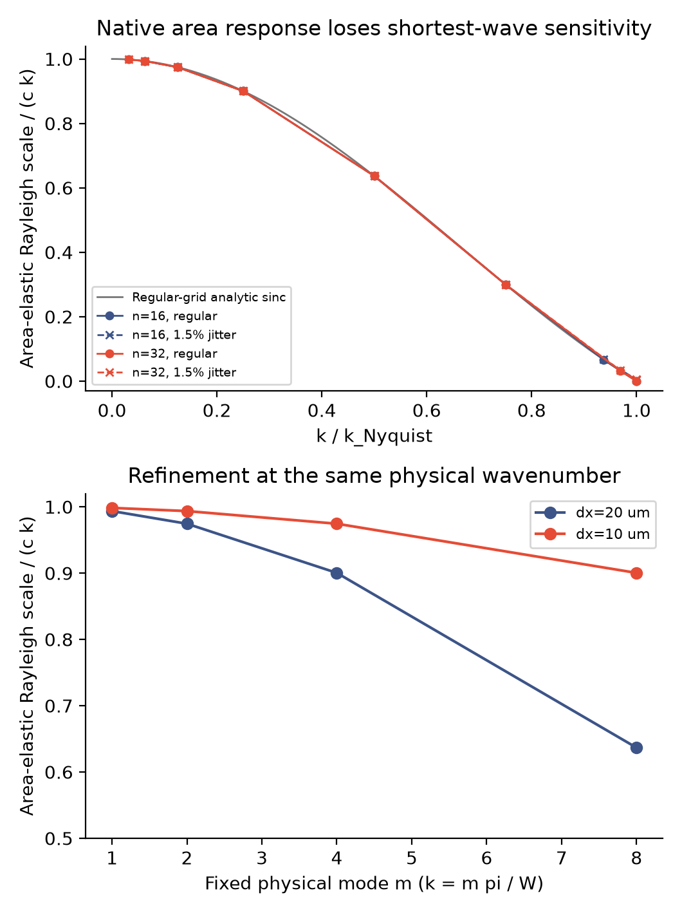

只读算子诊断 · 2026-11-13
最短的扰动，
面积变化可能“看不见”。
这是局部机制线索，不是最终原因判定。没有推进薄膜时间、改动力或材料。我们只检查现有原生几何程序如何把粒子速度变为单元面积变化，以及由此构成的面积弹性响应尺度。
为什么检查短波？
同样间距的微小位置变化可能影响粒子运动。查阅Heß与Springel（2010）发现，类似Voronoi粒子方法早已报告最短波长附近的压力恢复不足。因此，这不是新的通用方法主张，也不能直接证明当前排液差异的成因。
给程序一个已知的几何问题
在320×160微米平坦区域内，使用20或10微米间距，分别采用规则和1.5%扰动布局。逐渐缩短预设正弦速度的波长，读取原生面积Jacobian的响应。没有加入实际算例的接口与浴液节点。
规则布局下有可直接推导的面积变化公式，15组均与原生观察相符，最大归一化差异1.63e-14。全部30组的面积分割／总面积变化检查通过；这些几何检查不等于运动膜验收通过。

看到了什么？
长波响应接近连续尺度；缩短到每个波长只有两个粒子时，规则布局的响应接近机器零，1.5%扰动布局也只有约0.47–0.48%。这说明此面积算子对最短模式很不敏感。
相同物理波数m=8下，加密从20到10微米使该比值从0.637升至0.900，符合规则网格的解析关系。它提示需要分辨短波，而不是用守恒账本通过来代替空间精度。
下一步不能跳过什么？
仍需完成实际布局的独立时间配对，再检查实际运动是否含有相关模式，并进行真正的全域空间加密。当前没有证明短波机制主导200微秒差异，没有采用论文的人工形状校正力，也没有调整物理参数或放宽原门槛。完整C1、法向通量和实验验证仍待完成。
数据、计划、日志与复现
- 冻结计划与公式 · 来源、材料与二进制哈希 · 全部30组原生观察及日志路径 · 范围与摘要
- 全部60份原始输入／输出CSV · 原始字节哈希 · 恢复脚本 · 原生日志
恢复：python restore_raw.py REPORT_DIRECTORY NEW_OUTPUT_DIRECTORY，拒绝覆盖。原生几何累计5.17秒，没有长于两小时的任务。